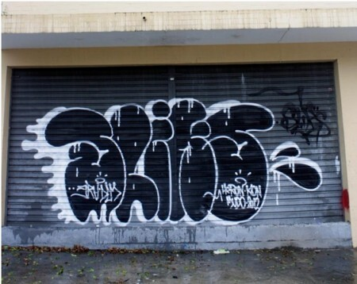
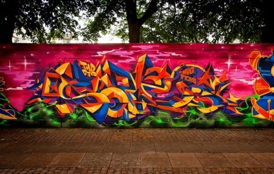
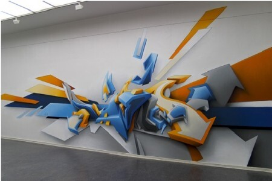

Bem-vindo ao mundo vibrante e expressivo do grafite! Nosso site é o seu ponto de partida para explorar e aprimorar suas habilidades nessa forma de arte urbana única. Aqui, você encontrará uma riqueza de recursos, tutoriais e inspiração para levar suas criações a novos patamares. Descubra o Mundo do Grafite A Arte de Expressar-se O grafite vai muito além de simplesmente pintar paredes. É uma forma de expressão que permite que você conte sua história, suas paixões e suas mensagens ao mundo. Em nosso site, mergulhe na essência do grafite como uma linguagem visual única e poderosa. Tutoriais Abrangentes Seja você um iniciante entusiasmado ou um artista experiente, nossos tutoriais abrangentes são projetados para todos os níveis de habilidade. Desde os fundamentos do manuseio da lata de spray até técnicas avançadas de sombreamento e perspectiva, estamos aqui para guiá-lo em cada etapa do processo criativo. Inspiração Infinita Galeria de Arte Explore nossa galeria de arte virtual, repleta de trabalhos inspiradores de grafiteiros talentosos de todo o mundo. Descubra estilos diversos, cores vibrantes e mensagens impactantes que demonstram a incrível diversidade dessa forma de arte urbana. Perfis de Artistas Conheça os mestres do grafite! Nossos perfis de artistas destacam os criadores mais influentes e inovadores da cena do grafite. Descubra suas histórias, técnicas exclusivas e deixe-se inspirar por suas jornadas artísticas.
Veja sobre diferentes tipos de grafites
Bomb– É o mais comum em Sampa. Caracterizado pelos desenhos e formatos rápidos em paredes, vagões de trem, portas de garagem, entre outras superfícies, o Bombé mais conhecido por ser feito em paredes ilegais.
Wildstyle– Nascido nas ruas de Nova Iorque na década de 70, essa forma complexa de grafite é caracterizada pelas intersecções das formas. Muitas vezes são tão detalhadas que nem dá para ler direito o que está escrito.
3D- Apesar de ser um tanto quanto auto explicativo, pode-se dizer que esse formato que tenta dar a impressão de algo tridimensional é relativamente novo no grafite.
acesse esse link